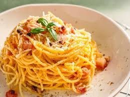

Les recettes de Marius et Mathis

Recette 1 : Pâtes à la Carbonara Traditionnelle (sans crème)
Ingrédients (pour 2 personnes) :
- 200 g de spaghetti
- 100 g de guanciale (ou pancetta si besoin)
- 2 jaunes d'œufs + 1 œuf entier
- 50 g de pecorino romano (ou parmesan)
- Sel et poivre noir fraîchement moulu
Préparation
- Cuire les pâtes dans de l’eau bouillante salée, al dente.
- Pendant ce temps, faire revenir le guanciale coupé en lardons
dans une poêle sans ajout de
matière
grasse, jusqu’à ce qu’il soit bien doré.
- Mélanger dans un bol : les jaunes + l’œuf entier + le pecorino +
beaucoup de poivre noir..
- Égoutter les pâtes (en gardant un peu d’eau de cuisson) et les verser dans
la poêle avec le
guanciale hors du feu.
- Ajouter la préparation œuf-fromage et mélanger énergiquement (hors feu) pour
créer une sauce
onctueuse. Ajouter un peu d’eau de cuisson si besoin.
- Servir immédiatement avec un peu de pecorino et du poivre.